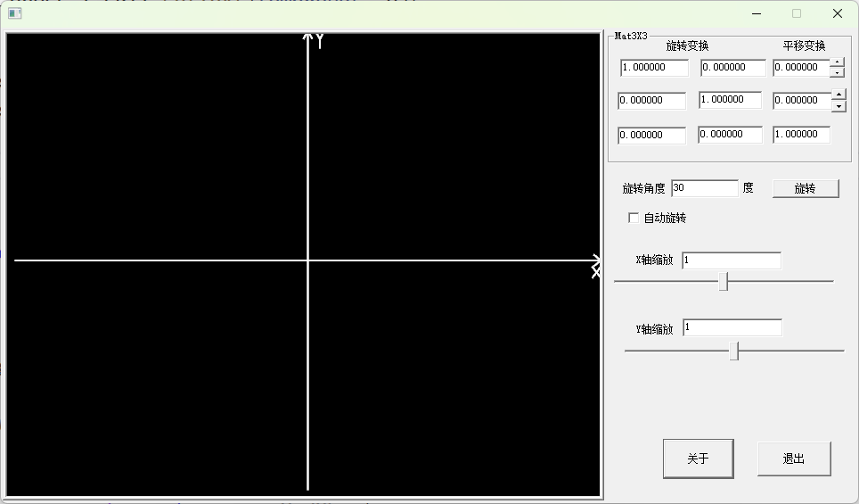

本文档为上以文档《在二维空间xoy坐标系中绘制三角形》的第二部分，这一部分我们主要学习现代OpenGL编程过程中VBO(Vertex Buffer Object)绘制物体。为避免概念的过渡跳跃，本文不使用Shader模式绘制图形，即仍然使用固定模式绘制图形。通过本文档的学习，我们主要为过渡到以后使用VAO+Shader模式下绘制图形打下基础。
① 拷贝上一文档的工程文件WinOpenGL2D目录，并命名为WinOpenGL2DUseVBO目录
② 使用vs2022打开WinOpenGL2D.sln工程文件
③ 删除不必要的文档
主要是删除virtual void GLDrawProcess(GL_Channel& _channel) 函数中绘制三角形部分代码：
x1virtual void GLDrawProcess(GL_Channel& _channel)2{3glClear(GL_COLOR_BUFFER_BIT | GL_DEPTH_BUFFER_BIT); // 清理颜色缓存和深度缓存4glClearColor(0.0, 0.0, 0.0, 0.0);5glColor3f(1.0, 1.0, 1.0);6glLineWidth(2.0f);8glBegin(GL_LINES);9glVertex2f(-195, 0);10glVertex2f(195, 0);11glVertex2f(195, 0);12glVertex2f(190, -5);13glVertex2f(195, 0);14glVertex2f(190, 5);15glVertex2f(195, -5);17glVertex2f(189, -15);18glVertex2f(189, -5);19glVertex2f(195, -15);20glEnd();21glBegin(GL_LINES);23glVertex2f(0, -195);24glVertex2f(0, 195);25glVertex2f(0, 195);27glVertex2f(-3, 188);28glVertex2f(0, 195);29glVertex2f(3, 188);30glVertex2f(5, 195);32glVertex2f(8, 188);33glVertex2f(8, 188);34glVertex2f(11, 195);35glVertex2f(8, 188);36glVertex2f(8, 180);37glEnd();39if (m_AUTORATATION.isChecked() == true)40{41wchar_t tempWchar[64];42m_RotationEdit.getText(tempWchar, 64);43float tF = std::stof(tempWchar);45tF += 0.1;46if (tF > 360)47tF = 0;48m_RotationEdit.setText(std::to_wstring(tF).c_str());49tF = glm::radians(tF);50mat33[0][0] = cos(tF);52m_Mat00.setText(std::to_wstring(mat33[0][0]).c_str());53mat33[0][1] = -sin(tF);55m_Mat01.setText(std::to_wstring(mat33[0][1]).c_str());56mat33[1][0] = sin(tF);58m_Mat10.setText(std::to_wstring(mat33[1][0]).c_str());59mat33[1][1] = cos(tF);61m_Mat11.setText(std::to_wstring(mat33[1][1]).c_str());62m_Mat02.getText(tempWchar, 64);64mat33[0][2] = std::stof(tempWchar);65m_Mat12.getText(tempWchar, 64);67mat33[1][2] = std::stof(tempWchar);68m_Mat20.getText(tempWchar, 64);70mat33[2][0] = std::stof(tempWchar);71m_Mat21.getText(tempWchar, 64);73mat33[2][1] = std::stof(tempWchar);74m_Mat22.getText(tempWchar, 64);76mat33[2][2] = std::stof(tempWchar);77}78//处理缩放计算79{80wchar_t tempWchar[64];81m_SCALE_X_EDIT.getText(tempWchar, 64);82float tScaleX = std::stof(tempWchar);83m_SCALE_Y_EDIT.getText(tempWchar, 64);84float tScaleY = std::stof(tempWchar);85_scaleMat[0][0] = tScaleX;//沿着X轴缩放的比例87_scaleMat[1][1] = tScaleY;//沿着X轴缩放的比例88}89};
④运行程序如下结果：

① 在class WindowsForm类中添加VBO对象：
GLuint posVbo = 0, colorVbo = 0;//OpenGL对象是通过定义中VBO变量的GLuint类型的整数号定义的
② 创建VBO对象并与数据绑定
x1GLuint oneVBOUseMultiDataBuffer = 0;//OpenGL对象是通过定义中VBO变量的GLuint类型的整数号定义的2void prepareVBOUseMultiDataBuffer()3{4//准备顶点颜色与数据5glm::vec3 positions[] = {6{0.0f, 100.0f ,0.0f},7{ -100.0 * 1.732050807568 * 0.5, -50.0f ,0.0f},8{ 100.0 * 1.732050807568 * 0.5, -50.0f ,0.0f}9};10glm::vec3 colors[] = {12{1.0f ,0.0f,0.0f},13{0.0f,1.0f,0.0f},14{0.0f,0.0f,1.0f}15};16// 为位置和颜色各自生成一个vbo17glGenBuffers(1, &oneVBOUseMultiDataBuffer);18//给两个分开的vbo各自填充数据20glBindBuffer(GL_ARRAY_BUFFER, oneVBOUseMultiDataBuffer);//OpenGL通过glBindBuffer函数设置GLContent使用当前VBO对象21glBufferData(GL_ARRAY_BUFFER, sizeof(positions) + sizeof(colors), nullptr, GL_STATIC_DRAW);//绑定数据23glBufferSubData(GL_ARRAY_BUFFER, 0, sizeof(positions), positions); // data 数据25glBufferSubData(GL_ARRAY_BUFFER, sizeof(positions), sizeof(colors), colors);27glBindBuffer(GL_ARRAY_BUFFER, 0);29}30virtual void UserInitialize()31{32prepareVBOUseMultiDataBuffer();33// prepareVBOUseOneDataBuffer();34};
③释放VBO对象
x1void DeleteVBOMultiDataBuffer()2{3if (oneVBOUseMultiDataBuffer > 0)4{5glDeleteBuffers(1, &oneVBOUseMultiDataBuffer); //销毁1个vbo6}7}9virtual void UserDestroy() {10DeleteVBOMultiDataBuffer();11};
④添加三角形VBO绘制代码
x1void DrawVBOMultiDataBuffer()2{3glBindBuffer(GL_ARRAY_BUFFER, oneVBOUseMultiDataBuffer);4glEnableClientState(GL_VERTEX_ARRAY); // 启用顶点数组5//解释顶点数据方式---下面两行代码是在shader模式下使用的6// glVertexAttribPointer(0, 3, GL_FLOAT, GL_FALSE, 3 * sizeof(float), 0);7// glEnableVertexAttribArray(0);8glVertexPointer(3, GL_FLOAT, 3 * sizeof(float), 0);9glEnableClientState(GL_COLOR_ARRAY);11glColorPointer(3, GL_FLOAT, 3 * sizeof(float), (void*)(9 * sizeof(float)));12//绘制模型14glDrawArrays(GL_TRIANGLES, 0, 3);15glBindBuffer(GL_ARRAY_BUFFER, 0);17glDisableClientState(GL_VERTEX_ARRAY); // 禁用顶点数组19glDisableClientState(GL_COLOR_ARRAY);20//--- 下面一行代码是在shader模式下使用的21//glDisableVertexAttribArray(0);22}23virtual void GLDrawProcess(GL_Channel& _channel)24{25glClear(GL_COLOR_BUFFER_BIT | GL_DEPTH_BUFFER_BIT); // 清理颜色缓存和深度缓存26glClearColor(0.0, 0.0, 0.0, 0.0);27glColor3f(1.0, 1.0, 1.0);28......省略代码29......省略代码30DrawVBOMultiDataBuffer();31};
⑤ 运行结果
知识点 ：
（一） VBO对象创建过程
❶ 创建缓冲区对象
与 OpenGL 中的很多其他实现类似，缓存对象也是使用 GLuint 的值来进行命名的。这个值可以使用 glGenBuffers() 命令来创建（OpenGL 4.5 引入了 glCreateBuffers() 和 glNamedBufferStorage() ）。
void glGenBuffers(GLsizei n, GLuint *buffers);
返回 n 个当前未使用的缓存对象名称，并保存到 buffers 数组中。返回到 buffers 中的名称不一定是连续的整型数据。这里返回的序号只用于分配其他缓存对象，它们在绑定之后只会记录一个可用的状态。零是一个被保留的缓冲区对象名称，不会被 glGenBuffers() 作为缓冲区对象返回。
glBufferData(GLenum target, GLsizeiptr size, const GLvoid *data, GLenum usage);函数参数说明：
功能：用于为缓冲对象（VBO，IBO 等）在显存中分配空间并存储数据，并将数据拷贝到显存对象中
参数：调用 glGenBuffers() 完成之后，我们将在 buffers 中得到一个缓存对象名称的数组，但是此时这些名称只是徒有其表。它们还不是真正的缓存对象。只有某个名称首次绑定到系统环境中的一个结合点之后，它所对应的缓存对象才会真正创建出来。这一点非常重要， 因为 OpenGL 会采取一种最优内存管理策略，根据缓存对象完成绑定的情况来分配它对应的内存。可用的缓存结合点（称作目标，target）如下表中所示。
| 目标 | 用途 |
|---|---|
| GL_ARRAY_BUFFER | 这个结合点可以用来保存 glVertexAttribPointer() 设置的顶点数组数据。在实际工程中这一目标可能是最为常用的。 |
| GL_COPY_READ_BUFFER 和 GL_COPY_WRITE_BUFFER | 这两个目标是一对互相匹配的结合点，用于拷贝缓存之间的数据，并且不会引起 OpenGL 的状态变化，也不会产生任何特殊形式的 OpenGL 调用。 |
| GL_DRAW_INDIRECT_BUFFER | 如果采取间接绘制（indirect drawing）的方法，那么这个缓存目标用于存储绘制命令的参数。 |
| GL_ELEMENT_ARRAY_BUFFER | 绑定到这个目标的缓存中可以包含顶点索引数据，以便用于 glDrawElements() 等索引形式的绘制命令。 |
| GL_PIXEL_PACK_BUFFER | 这一缓存目标用于从图像对象中读取数据，例如纹理和帧缓存数据。相关的 OpenGL 命令包括 glGetTexImage() 和 glReadPixels() 等。 |
| GL_PIXEL_UNPACK_BUFFER | 这一缓存目标与之前的 GL_PIXEL_PACK_BUFFER 相反，它可以作为 glTexImage2D() 等命令的数据源使用。 |
| GL_TEXTURE_BUFFER | 纹理缓存也就是直接绑定到纹理对象的缓存，这样就可以直接在着色器中读取它们的数据信息。GL_TEXTURE_BUFFER 可以提供一个操控此类缓存的目标，但是我们还需要将缓存关联到纹理，才能确保它们在着色器中可用。 |
| GL_TRANSFORM_FEEDBACK_BUFFER | transform feedback 是 OpenGL 提供的一种便捷方案，它可以在管线的顶点处理部分结束时（即经过了顶点着色，可能还有几何着色阶段），将经过变换的顶点重新捕获，并且将部分属性写入到缓存对象中。这一目标就提供了这样的结合点，可以建立专门的缓存来记录这些属性数据。 |
| GL_UNIFORM_BUFFER | 这个目标可以用于创建 uniform 缓存对象（uniform buffer object）的缓存数据。 |
缓存对象的建立，实际上就是通过调用 glGenBuffers() 函数生成一系列名称，然后通过 glBindBuffer() 将一个名称绑定到上表中的一个目标来完成的。
❷ void glBindBuffer(GLenum target, GLuint buffer);
指定当前激活的缓存对象。 buffer 设置的是要绑定的缓存对象名称。将名称为 buffer 的缓存对象绑定到 target 所指定的缓存结合点。target 必须是 OpenGL 支持的缓存绑定目标之一，buffer 必须是通过 glGenBuffers() 分配的名称。如果 buffer 是第一次被绑定，那么它所对应的缓存对象也将同时被创建。glBindBuffer() 完成了三项工作：1）如果是第一次绑定 buffer ，且它是一个非零的无符号整型，那么将创建一个与该名称相对应的新缓存对象。2） 如果绑定到一个已经创建的缓存对象，那么它将成为当前被激活的缓存对象。3）如果绑定的 buffer 值为 0，那么 OpenGL 将不再对当前 target 应用任何缓存对象。
❸ void glBufferData(GLenum target, GLsizeiptr size, const GLvoid* data, GLenum usage);
向缓存输入和输出数据，将数据输入和输出 OpenGL 缓存的方法有很多种。比如直接显式地传递数据，又比如用新的数据替换缓存对象中已有的部分数据，或者由 OpenGL 负责生成数据然后将它记录到缓存对象中。向缓存对象中传递数据最简单的方法就是在分配内存的时候读入数据。这 一步可以通过 glBufferData() 函数来完成。为绑定到 target 的缓存对象分配 size 大小（单位为字节）的存储空间，如果当前绑定的对象已经存在了关联的数据，那么会首先删除这些数据。如果参数 data 不是 NULL ，那么将使用 data 所在的内存区域的内容来初始化整个空间。usage 允许应用程序向 OpenGL 端发出一个提示，指示缓存中的数据可能具备一些特定的用途。
为绑定到 target 的缓存对象分配 size 大小（单位为字节）的存储空间，如果当前绑定的对象已经存在了关联的数据，那么会首先删除这些数据。如果参数 data 不是 NULL ，那么将使用 data 所在的内存区域的内容来初始化整个空间。usage 允许应用程序向 OpenGL 端发出一个提示，指示缓存中的数据可能具备一些特定的用途。对于顶点属性数据，target 设置为 GL_ARRAY_BUFFER ；索引数据为 GL_ELEMENT_ARRAY_BUFFER ； OpenGL 的像素数据为 GL_PIXEL_UNPACK_BUFFER ；对于从 OpenGL 中获取的像素数据为 GL_PIXEL_PACK_BUFFER；对于缓存之间的复制数据为 GL_COPY_READ_BUFFER 和 GL_COPY_WRITE_BUFFER ；对于纹理缓存中存储的纹理数据为 GL_TEXTURE_BUFFER ；对于通过 transform feedback 着色器获得的结果设置为 GL_TRANSFORM_FEEDBACK_BUFFER ；而一致变量要设置为 GL_UNIFORM_BUFFER 。
size 表示存储数据的总数量。这个数值等于 data 中存储的元素的总数乘以单位元素 存储空间的结果。
data 要么是一个客户端内存的指针，以便初始化缓存对象，要么是 NULL 。如果传 入的指针合法，那么将会有 size 大小的数据从客户端（主机：CPU、内存）拷贝到服务端（设备：GPU）。如果传入 NULL ， 那么将保留 size 大小的未初始化的数据，以备后用。
如果所需的 size 大小超过了服务端能够分配的额度，那么 glBufferData() 将产生一 个 GL_OUT_OF_MEMORY 错误。要特别注意的是，glBufferData() 是真正为缓存对象分配（或者重新分配）存储空间的。也就是说，如果新的数据大小比缓存对象当前所分配的存储空间要大，那么缓存对象的大小将被重设以获取更多空间。与之类似，如果新的数据大小比当前所分配的缓存要小，那么缓存对象将会收缩以适应新的大小。因此，虽然我们可以直接在初始化的时候指定缓存对象中的数据，但是这只是一种方便的用法而已，并不一定就是最好的方法（有的时候也不一定是最方便的用法）。
对于顶点属性数据，target 设置为 GL_ARRAY_BUFFER ；索引数据为 GL_ELEMENT_ARRAY_BUFFER ； OpenGL 的像素数据为 GL_PIXEL_UNPACK_BUFFER ；对于从 OpenGL 中获取的像素数据为 GL_PIXEL_PACK_BUFFER；对于缓存之间的复制数据为 GL_COPY_READ_BUFFER 和 GL_COPY_WRITE_BUFFER ；对于纹理缓存中存储的纹理数据为 GL_TEXTURE_BUFFER ；对于通过 transform feedback 着色器获得的结果设置为 GL_TRANSFORM_FEEDBACK_BUFFER ；而一致变量要设置为 GL_UNIFORM_BUFFER 。
OpenGL 对于缓存对象存储数据中的最优分配方案的管理，并不仅仅依赖于初始化绑定时的 target 参数。另一个重要的参数就是 glBufferData() 中的 usage 。usage 必须是内置标准标识符中的一个，例如 GL_STATIC_DRAW 或者 GL_DYNAMIC_COPY 。注意这里的标识符名称要分解为两个部分去理解：第一部分可以是 STATIC、DYNAMIC 或者 STREAM 中的一个，而第二部分可以是 DRAW、READ 或者 COPY 中的一个。这些“分解”的标识符的具体含义如下表所示。
| “分解”的标识符 | 意义 |
|---|---|
| STATIC | 数据存储内容只写入一次，然后多次使用 |
| DYNAMIC | 数据存储内容会被反复写入和反复使用 |
| STREAM | 数据存储内容只写入一次，然后也不会被频繁使用。 |
| _DRAW | 数据存储内容由应用程序负责写入，并且作为 OpenGL 绘制和图像命令的数据源。 |
| _READ | 数据存储内容通过 OpenGL 反馈的数据写入，然后在应用程序进行查询时返回这些数据。 |
| _COPY | 数据存储内容通过 OpenGL 反馈的数据写入，并且作为 OpenGL 绘制和图像命令的数据源。 |
如何为 usage 参数提供一个准确的定义，这关系到能否达到最优的性能。这个参数向 OpenGL 提供了重要的缓存使用策略信息。首先考虑相关标识符的第一部分。如果标识符使用 _STATIC_ 开头，那么就是说数据的变动是非常有限的，或者根本就没有—因为它在本质上是静态数据。这类标识符显然需要用于那些只修改过一次就不再变动的数据类型。 如果 usage 包含了 _STATIC_ ，那么 OpenGL 会在内部对数据重新进行处理，以保证它在内存中的布置更为合理，或者使用更为优化的数据格式。这一步操作的代价可能较大，但是由于数据已经是静态的，因此这一操作只需要执行一次，整体上还是非常理想的。
如果在 usage 中包含了 _DYNAMIC_ ，那么说明数据的变动是频繁的，而变动过程中对数据的使用也是频繁的。例如，如果有一个建模程序，它所使用的数据可能被用户所编辑，此时有必要用到这个标识符。这种时候，一个可能的情况是数据在多帧内被持续使用， 然后被修改，然后再次被更多帧使用，如此反复。这种情况的相反面就是 GL_STREAM_ 标识符。它的含义是，缓存数据的修改是有规律的，并且每次修改数据后只会少量地加以使用（可能只使用一次）。这种时候，OpenGL 甚至可能不会将数据拷贝到快速的图像内存中，而是直接在原地进行访问。这种情形通常发生在 CPU 端执行应用程序诸如物理仿真的操作时，此时每帧都会给出一些新的数据集，供程序调取。
现在我们要了解 usage 标识符的第二部分。这一部分指示更新和使用数据的责任者。如果这个标识符包含 _DRAW ，那么就是说这处缓存将作为标准 OpenGL 绘制操作的数据源使用。它会被频繁地读取；而与之相反的就是在标识符中包含 _READ ，这类标识符会被频繁地写入。如果应用程序需要从缓存中回读数据，那么应当使用 _READ 标识符，这样 OpenGL 会认为这处数据是需要多次写入的。如果缓存中保存的是顶点数据，那么 usage 参数中必须包含 _DRAW ；而像素缓存对象（pixel buffer object）和其他从 OpenGL 端获取数据的缓存则必须使用含有 _READ 的标识符。最后，如果 usage 中包含 _COPY ，那么说明应用程序会通过 OpenGL 端来生成数据并且保存到缓存中，然后将它作为后继的绘制操作的输入源。使用 _COPY 标识符的一个相应例子就是 transform feedback 缓存， 这个缓存需要由 OpenGL 写入数据，然后在之后的绘制命令中再作为顶点缓存使用。
如果 usage 设置的不是可用的模式值，那么将产生 GL_INVALID_VALUE 错误。
至此我们就完成了VBO对象的初始化工作。
（二）VBO对象的删除
glGenBuffers(GLsizei n, GLuint *buffers);函数根据参数n,会创建n个缓冲区对象，在使用完后需要进行删除，这一点很重要，其删除函数为：
void glDeleteBuffers(GLsizei n, const GLuint *buffers);
删除 n 个保存在 buffers 数组中的缓存对象。被释放的缓存对象可以重用（例如，使用 glGenBuffers() ）。如果删除的缓存对象已经被绑定，那么该对象的所有绑定将会重置为默认的缓存对象，即相当于用 0 作为参数执行 glBindBuffer() 的结果。如果试图删除不存在的缓存对象，或者缓存对象为 0，那么将忽略该操作（不会产生错误）。我们也可以用 glIsBuffer() 来判断一个整数值是否是一个缓存对象的名称。
GLboolean glIsBuffer(GLuint buffer);
（三）使用VBO对象绘制图形------VBO对象的使用
void glBufferData(GLenum target, GLsizeiptr size, const GLvoid* data, GLenum usage);向显存中传送的数据，并没有告诉GLContext这些数据的意义，所以当应用程序使用VBO绘制图形时，首先需要设置VBO对象的数据属性：
glEnableClientState(GL_VERTEX_ARRAY);---------对应顶点数据
glEnableClientState(GL_NORMAL_ARRAY);---------对应法向量数据
glEnableClientState(GL_COLOR_ARRAY);------------对应颜色数组
glEnableClientState(GL_INDEX_ARRAY );------------索引数组
glEnableClientState(GL_TEXTURE_COORD_ARRAY);------------纹理坐标数组
glEnableClientState(GL_EDGE_FLAG_ARRAY );------------边缘标志数组
解释顶点数据方式：
glVertexPointer ——-解析顶点数据数组中数据的排列组合形式
glColorPointer ——-解析颜色数据数组中数据的排列组合形式
glNormalPointer ——-解析法向量数据数组中数据的排列组合形式
glTexCoordPointer ——-解析纹理坐标数据数组中数据的排列组合形式
glIndexPointer ——-解析索引数据数组中数据的排列组合形式
glEdgeFlagPointe ——-解析边缘标志数组中数据的排列组合形式
下面我们以glVertexPointer为例详细解释其参数的意义：
glVertexPointer( GLint size, // 指定顶点属性的大小。顶点属性是一个vec3，它由3个值组成，所以大小是3
GLenum type, //参数指定数据的类型，这里是GL_FLOAT(GLSL中vec*都是由浮点数值组成的)。
GLsizei stride,//步长(Stride)，它告诉我们在连续的顶点属性组之间的间隔。
const void *pointer//数据指针，指向数组中数据的偏移地址
)
在实际使用中我们使用了glVertexAttribPointer函数解析了顶点数组的排列循序，目的是为了过渡到Shader编程的现代OpenGL程序绘制方式。下面我们详细解析一下glVertexAttribPointer函数的参数意义：
glVertexAttribPointer(GLuint index,//指定我们要配置的顶点属性。对应顶点着色器layout(location = 0)定义(Location)值。
GLint size, // 指定顶点属性的大小。顶点属性是一个vec3，它由3个值组成，所以大小是3
GLenum type, //数据的类型，GL_BYTE、GL_UNSIGNED_BYTE、GL_SHORT、GL_UNSIGNED_SHORT、GL_INT GL_UNSIGNED_INT。
GLboolean normalized, //是否希望数据被标准化(Normalize)。如果我们设置为GL_TRUE，数据会被映射到0-1或-1~1之间。GL_FALSE 数据不被转化
GLsizei stride, //做步长(Stride)，它告诉我们在连续的顶点属性组之间的间隔
const void *pointer * //pointer被当做该缓冲对象数据存储区的字节偏移量。
);
在使用glVertexAttribPointer对顶点数据数组进行解释时，需要开启glEnableVertexAttribArray(0);0号Shader数据layout，否则就会出错。
（四）VBO缓冲区队形的更高级使用
缓存的部分初始化
假设有一个包含部分顶点数据的数组，另一个数组则包含一部分颜色信息，还有一个数组包含纹理坐标或者别的什么数据。你需要将这些数据进行紧凑的打包，并且存入一个足够大的缓存对象让 OpenGL 使用。在内存中数组之间可能是连续的，也可能不连续，因此无法使用 glBufferData() 一次性地更新所有的数据。此外，如果使用 glBufferData() 进行更新的话，那么首先是顶点数据，然后缓存的大小与顶点数据的大小完全一致，并且也就不再有空间去存储颜色或者纹理坐标信息了。因此我们需要引入新的 glBufferSubData() 函数。
xxxxxxxxxx11void glBufferSubData(GLenum target, GLintptr offset, GLsizeiptr size, const GLvoid* data);
使用新的数据替换缓存对象中的部分数据。绑定到 target 的缓存对象要从 offset 字节处开始需要使用地址为 data 、大小为 size 的数据块来进行更新。如果 offset 和 size 的总和超出了缓存对象绑定数据的范围，那么将产生一个错误。如果将 glBufferData() 和 glBufferSubData() 结合起来使用，那么我们就可以对一个缓存对象进行分配和初始化，然后将数据更新到它的不同区块当中。一个相应的示例可以参见下例 。
xxxxxxxxxx461// Vertex positions 顶点位置2static const GLfloat positions[] =3{-1.0f, -1.0f, 0.0f, 1.0f,41.0f, -1.0f, 0.0f, 1.0f,51.0f, 1.0f, 0.0f, 1.0f,6-1.0f, 1.0f, 0.0f, 1.0f};7// Vertex colors 顶点颜色9static const GLfloat colors[] =10{111.0f, 0.0f, 0.0f,120.0f, 1.0f, 0.0f,130.0f, 0.0f, 1.0f,141.0f, 1.0f, 1.0f,15};16// The buffer object 缓存对象18GLuint buffer;19// Reserve a name for the buffer object. 为缓存对象生成一个名称21glGenBuffers(1, &buffer);22// Bind it to the GL_ARRAY_BUFFER target. 将它绑定到 GL_ARRAY_BUFFER 目标23glBindBuffer(GL_ARRAY_BUFFER, buffer);24// Allocate space for it (sizeof(positions) + sizeof(colors)).26// 分配足够的空间（sizeof(positions) + sizeof(colors)）27glBufferData(GL_ARRAY_BUFFER, // target 目标28sizeof(positions) + sizeof(colors), // total size 总计大小29NULL, // no data 无数据30GL_STATIC_DRAW); // usage 用途31// Put "positions" at offset zero in the buffer. 将位置信息放置在缓存的偏移地址为0的位置33glBufferSubData(GL_ARRAY_BUFFER, // target 目标340, // offset 偏移地址35sizeof(positions), // size 大小36positions); // data 数据37// Put "colors" at an offset in the buffer equal to the filled size of39// the buffer so far- i.e., sizeof(positions).40// 放置在缓存中的颜色信息的偏移地址为当前填充大小值的位置，也就是sizeof(positions)41glBufferSubData(GL_ARRAY_BUFFER, // target 目标42sizeof(positions), // offset 偏移地址43sizeof(colors), // size 大小44colors); // data 数据45// 现在位置信息位于偏移 0，而颜色信息保存在同一缓存中，紧随其后
如果只是希望将缓存对象的数据清除为一个已知的值，那么也可以使用 glClearBufferData() 或者 glClearBufferSubData() 函数。它们的原型如下所示：
void glClearBufferData(GLenum target, GLenum internalformat, GLenum format, GLenum type, const void* data);
void glClearBufferSubData(GLenum target, GLenum internalformat, GLintptr offset, GLintptr size, GLenum format, GLenum type, const void* data);
清除缓存对象中所有或者部分数据。绑定到 target 的缓存存储空间将使用 data 中存储的数据进行填充。 format 和 type 分别指定了 data 对应数据的格式和类型。首先将数据被转换到 internalformat 所指定的格式，然后填充缓存数据的指定区域范围。对于 glClearBufferData() 来说，整个区域都会被指定的数据所填充。而对于 glClearBufferSubData() 来说，填充区域是通过 offset和 size 来指定的，它们分别给出 了以字节为单位的起始偏移地址和大小。glClearBufferData() 和 glClearBufferSubData() 函数允许我们初始化缓存对象中存储的数据，并且不需要保留或者清除任何一处系统内存。
缓存对象中的数据也可以使用 glCopyBufferSubData() 函数互相进行拷贝。与 glBufferSubData() 函数对较大缓存中的数据依次进行组装的做法不同，此时我们可以使用 glBufferData() 将数据更新到独立的缓存当中，然后将这些缓存直接用 glCopyBufferSubData() 拷贝到一个较大的缓存中（这是一种有效的做法。这种做法的好处是，你可以通过更新较小的、独立的缓存来减少 GPU 的等待时间，并在适当的时候将它们合并到一个更大的缓存中。这样做可以提高数据处理的效率和灵活性）。你也可以分配一系列缓存对象，然后循环对它们进行两两操作，确保正在写入的数据不会同时被使用，从而实现拷贝数据的叠加。
xxxxxxxxxx21void glCopyBufferSubData(GLenum readtarget, GLenum writetarget, 2GLintptr readoffset, GLintprr writeoffset, GLsizeiptr size); 将绑定到 readtarget 的缓存对象的一部分存储数据拷贝到与 writetarget 相绑定的缓存对象的数据区域上。readtarget 对应的数据从 readoffset 位置开始复制 size 个字节，然后拷贝到 writetarget 对应数据的 writeoffset 位置。如果 readoffset 或者 writeoffset 与 size 的和超出了绑定的缓存对象的范围，那么 OpenGL 会产生一个 GL_INVALID_VALUE 错误。glCopyBufferSubData() 可以在两个目标对应的缓存之间拷贝数据，而 GL_COPY_READ_BUFFER 和 GL_COPY_WRITE_BUFFER 这两个目标正是为了这个目的而生。它们不能用于其他 OpenGL 的操作当中，并且如果将缓存与它们进行绑定，并且只用于数据的拷贝和存储目的，不影响 OpenGL 的状态也不需要记录拷贝之前的目标区域信息的话，那么整个操作过程都是可以保证安全的。
读取缓存的内容
我们可以通过多种方式从缓存对象中回读数据。第一种方式就是使用 glGetBufferSubData() 函数。这个函数可以从绑定到某个目标的缓存中回读数据，然后将它放置到应用程序保有的一处内存当中。
void glGetBufferSubData(GLenum target, GLintptr offset, GLsizeiptr size, GLvoid* data);
返回当前绑定到 target 的缓存对象中的部分或者全部数据。起始数据的偏移字节位置为 offset，回读的数据大小为 size 个字节，它们将从缓存的数据区域拷贝到 data 所指向的内存区域中。如果缓存对象当前已经被映射，或者 offset 和 size 的和超出了缓存对象数据区域的范围，那么将提示一个错误。如果我们使用 OpenGL 生成了一些数据，然后希望重新获取到它们的内容，那么此时应该使用 glGetBufferSubData() 。这样的例子包括在 GPU 级别使用 transform feedback 处理顶点数据，以及将帧缓存或者纹理数据读取到像素缓存对象（Pixel Buffer Object）中。以后将依次给出这些内容的具体介绍。当然，我们也可以使用 glGetBufferSubData() 简单地将之前存入到缓存对象中的数据读回到内存中。
直接访问缓存的内容
目前为止，在这一节当中给出的所有函数（glBufferData()、glBufferSubData()、 glCopyBufferSubData() 和 glGetBufferSubData()）都存在同一个问题，就是它们都会导致 OpenGL 进行一次数据的拷贝操作。glBufferData() 和 glBufferSubData() 会将应用程序内存中的数据拷贝到 OpenGL 管理的内存当中。显而易见 glCopyBufferSubData() 会将源缓存中的内容进行一次拷贝。 glGetBufferSubData() 则是将 OpenGL 管理的内存中的数据拷贝到应用程序内存中。根据硬件的配置，其实也可以通过获取一个指针的形式，直接在应用程序中对 OpenGL 管理的内存进行访问。当然，获取这个指针的对应函数就是 glMapBuffer() 。
void* glMapBuffer(GLenum target, GLenum access);
将当前绑定到 target 的缓存对象的整个数据区域映射到客户端（主机）的地址空间中。之后可以根据给定的 access 策略，通过返回的指针对数据进行直接读或者写的操作。如果 OpenGL 无法将缓存对象的数据映射出来，那么 glMapBuffer() 将产生一个错误并且返回 NULL 。发生这种情况的原因可能是与系统相关的，比如可用的虚拟内存过低等。当我们调用 glMapBuffer() 时，这个函数会返回一个指针，它指向绑定到 target 的缓存对象的数据区域所对应的内存。注意这块内存只是对应于这个缓存对象本身—它不一定就是图形处理器用到的内存区域。access 参数指定了应用程序对于映射后的内存区域的使用方式。它必须是下表中列出的标识符之一。
| 标识符 | 意义 |
|---|---|
| GL_READ_ONLY | 应用程序仅对 OpenGL 映射的内存区域执行读操作。 |
| GL_WRITE_ONLY | 应用程序仅对 OpenGL 映射的内存区域执行写操作。 |
| GL_READ_WRITE | 应用程序对 OpenGL 映射的内存区域可能执行读或者写的操作。 |
如果 glMapBuffer() 无法映射缓存对象的数据，那么它将返回 NULL 。 access 参数相当于用户程序与 OpenGL 对内存访问的一个约定。如果用户违反了这个约定，那么将产生很不好的结果，例如写缓存的操作将被忽略，数据将被破坏，甚至用户程序会直接崩溃。当你要求映射到应用程序层面的数据正处于无法访问的内存当中，OpenGL 可能会被迫将数据进行移动，以保证能够获取到数据的指针，也就是你期望的结果。与之类似，当你完成了对数据的操作，以及对它进行了修改，那么 OpenGL 将再次把数 据移回到图形处理器所需的位置上。这样的操作对于性能上的损耗是比较高的，因此必须特别加以对待。
如果缓存已经通过 GL_READ_ONLY 或者 GL_READ_WRITE 访问模式进行了映射， 那么缓存对象中的数据对于应用程序就是可见的。我们可以回读它的内容，将它写入磁盘文件，甚至直接对它进行修改（如果使用了 GL_READ_WRITE 作为访问模式的话）。如果访问模式为 GL_READ_WRITE 或者 GL_WRITE_ONLY ，那么可以通过 OpenGL 返回的指针向映射内存中写入数据。当结束数据的读取或者写入到缓存对象的操作之后，必须使用 glUnmapBuffer() 执行解除映射操作，它的原型如下所示：
GLboolean glUnmapBuffer(GLenum target);
解除 glMapBuffer() 创建的映射。如果对象数据的内容在映射过程中没有发生损坏， 那么 glUnmapBuffer() 将返回 GL_TRUE 。发生损坏的原因通常与系统相关，例如屏幕模式发生了改变，这会影响图形内存的可用性。这种情况下，函数的返回值为 GL_FALSE ， 并且对应的数据内容是不可预测的。应用程序必须考虑到这种几率较低的情形，并且及时对数据进行重新初始化。
如果解除了缓存的映射，那么之前写入到 OpenGL 映射内存中的数据将会重新对缓存对象可见。这句话的意义是，我们可以先使用 glBufferData() 分配数据空间，并且在 data 参数中直接传递 NULL ，之后进行映射并且直接将数据写入，最后解除映射，从而完成了数据向缓存对象传递的操作。例 2 所示就是一个将文件内容读取并写入到缓存对象的例子：
xxxxxxxxxx291GLuint buffer;2FILE *f;3size_t filesize;4// Open a file and find its size 打开文件并确定它的大小6f = fopen("data.dat", "rb");7fseek(f, 0, SEEK_END);8filesize = ftell(f);9fseek(f, 0, SEEK_SET);10// 生成缓存名字并将它绑定到缓存绑定点上—这里是12// GL_COPY_WRITE_BUFFER（在这里这个绑定点并没有实际意义），13// 这样就可以创建缓存了14glGenBuffers(1, &buffer);15glBindBuffer(GL_COPY_WRITE_BUFFER, buffer);16// 分配缓存中存储的数据空间，向 data 参数传入 NULL 即可18glBufferData(GL_COPY_WRITE_BUFFER, (GLsizei)filesize, NULL,19GL_STATIC_DRAW);20// 映射缓存……22void *data = glMapBuffer(GL_COPY_WRITE_BUFFER, GL_WRITE_ONLY);23// 将文件读入缓存25fread(data, 1, filesize, f);26// 好了，现在我们已经完成了实验，可以解除缓存映射并关闭文件了28glUnmapBuffer(GL_COPY_WRITE_BUFFER);29fclose(f);
例 子中所有内容都在单一操作中被读入到缓存对象当中。缓存对象创建时的大小与文件是相同的。当缓存映射之后，我们就可以直接将文件内容读入到缓存对象的 数据区域当中。应用程序端并没有拷贝的操作，并且如果数据对于应用程序和图形处理器都是可见的，那么 OpenGL 端也没有进行任何拷贝的操作。
使用这种方式来初始化缓存对象可能会带来显著的性能优势。其理由如下：如果调用 glBufferData() 或者 glBufferSubData() ，当返回这些函数后，我们可以对返回的内存区域中的数据进行任何操作——释放它，使用它做别的事情——都是可以的。这也就是说，这些函数在完成后不能与内存区域再有任何瓜葛，因此必须采取数据拷贝的方式。但是，如果调用 glMapBuffer() ，它所返回的指针是 OpenGL 端管理的。当调用 glUnmapBuffer() 时，OpenGL 依然负责管理这处内存，而用户程序与这处内存已经不再有瓜葛了。这样的话 即使数据需要移动或者拷贝，OpenGL 都可以在调用 glUnmapBuffer() 之后才开始这些操作并且立即返回，而内容操作是在系统的空闲时间之内完成，不再受到应用程序的影响。因此，OpenGL 的数据拷贝操作与应用程序之后的操作（例如建立更多的缓存，读取别的文件，等等）实际上是同步进行的。如果不需要进行拷贝的话，那么结果就再好不过了！此时在本质上解除映射的操作相当于是对空间的释放。
异步和显式的映射
为了避免 glMapBuffer() 可能造成的缓存映射问题（例如应用程序错误地指定了 access 参数，或者总是使用 GL_READ_WRITE ）， glMapBufferRange() 函数使用额外的标识符来更精确地设置访问模式， glMapBufferRange() 函数的原型如下所示：
void* glMapBufferRange(GLenum target, GLintptr offset, GLsizeiptr length, GLbitfi eld access);
将缓存对象数据的全部或者一部分映射到应用程序的地址空间中。target 设置了缓存对象当前绑定的目标。 offset 和 length 一起设置了准备映射的数据范围（单位为字节）。 access 是一个位域标识符，用于描述映射的模式。这个函数用于将缓冲区对象的一部分映射到客户端地址空间，使得应用程序可以直接读写这部分数据。这些函数接受几个参数，其中一个是用于指定映射选项的标志。对于 glMapBufferRange() 来说，access 位域中必须包含 GL_MAP_READ_BIT 和 GL_ MAP_WRITE_BIT 中的一个或者两个，以确认应用程序是否要对映射数据进行读操作、写操作，或者两者皆有。此外，access 中还可以包含一个或多个其他的标识符，如下表所示。
| 标识符 | 意义 |
|---|---|
| GL_MAP_INVALIDATE_RANGE_BIT | 如果设置的话，给定的缓存区域内任何数据都可以被抛弃以及无效化。如果给定区域范围内任何数据没有被随后重新写入的话，那么它将变成未定义的数据。这个标识符无法与 GL_MAP_READ_BIT 同时使用。这个标志通常用于那些你不需要保留旧数据，只关心新写入的数据的场景。当设置 GL_MAP_INVALIDATE_RANGE_BIT 时，OpenGL 驱动程序会放弃（invalidate）映射区域内的所有数据，即这部分数据将不再有效。这意味着，如果这部分数据在 GPU 上被使用（比如作为顶点数据或纹理数据），那么这些使用将不再有效，因为这些数据已经被标记为无效。 |
| GL_MAP_INVALIDATE_BUFFER_BIT | GL_MAP_INVALIDATE_BUFFER_BIT 的作用类似于 GL_MAP_INVALIDATE_RANGE_BIT，但它影响的是整个缓冲区对象，而不是特定的范围。如果设置的话，缓存的整个内容都可以被抛弃和无效化，不再受到区域范围的设置影响。所有映射范围之外的数据都会变成未定义的状态，而如果范围内的数据没有被随后重新写入的话，那么它也会变成未定义。这个标识符无法与 GL_MAP_READ_BIT 同时使用。这通常用于那些你需要完全重新填充缓冲区对象，而不需要保留任何旧数据的场景。 |
| GL_MAP_FLUSH_EXPLICIT_BIT | 应用程序将负责通知 OpenGL 映射范围内的哪个部分包 含了可用数据，方法是在调用 glUnmapBuffer() 之前调用 glFlushMappedBufferRange()。如果缓存中较大范围内的数据都会被映射，而并不是全部被应用程序写入的话，应当使用这个标识符。这个位标识符必须与 GL_MAP_WRITE_BIT 结合使用。如果 GL_MAP_FLUSH_EXPLICIT_BIT 没有定义的话，那么 glUnmapBuffer() 会自动刷新整个映射区域的内容。 |
| GL_MAP_UNSYNCHRONIZED_BIT | 如果这个位标识符没有设置的话，那么 OpenGL 会等待所有正在处理的缓存访问操作结束，然后再返回映射范围的内存。如果设置了这个标识符，那么 OpenGL 将不会尝试进行这样的缓存同步操作。 |
正如你在上表中看到的这些标识符所提示的，对于 OpenGL 数据的使用以及数据访问时的同步操作，这个命令可以实现一个更精确的控制过程。
如果打算通过 GL_MAP_INVALIDATE_RANGE_BIT 或者 GL_MAP_INVALIDATE_BUFFER_BIT 标识符来实现缓存数据的无效化，那么也就意味着 OpenGL 可以对缓存对象中任何已有的数据进行清理。除非你确信自己要同时使用 GL_MAP_WRITE_BIT 标识符对缓存进行写入操作，否则不要设置这两个标识符中的任意一个。如果你设置了 GL_MAP_ INVALIDATE_RANGE_BIT 的话，你的目的应该是对某个区域的整体进行更新（或者至少是其中对你的程序有意义的部分）。如果设置了 GL_MAP_INVALIDATE_BUFFER_BIT ，那么就意味着你不打算再关心那些没有被映射的缓存区域的内容了。无论是哪种方法，你都必须通过标识符的设置来声明你准备在后继的映射当中对缓存中剩下的部分进行更新 。由于此时 OpenGL 是可以抛弃缓存数据中剩余的部分，因此即使你将修改过的数据重新 合并到原始缓存中也没有什么意义了。因此，如果打算对映射缓存的第一个部分使用 GL_MAP_INVALIDATE_BUFFER_BIT，然后对缓存其他的部分使用 GL_MAP_INVALIDATE_RANGE_BIT ，那么应该是一个不错的想法。
GL_MAP_UNSYNCHRONIZED_BIT 标识符用于禁止 OpenGL 数据传输和使用时的自动同步机制。没有这个标志符的话，OpenGL 会在使用缓存对象之前完成任何正在执行的命令。这一步与 OpenGL 的管线有关，因此可能会造成性能上的损失。如果可以确保之后的操作可以在真正修改缓存内容之前完成（不过在调用 glMapBufferRange() 之前这并不是必须的），例如调用 glFinish() 或者使用一个同步对象，那么 OpenGL 也就不需要专门为此维护一个同步功能了。
最后，GL_MAP_FLUSH_EXPLICIT_BIT 标识符表明了应用程序将通知 OpenGL 它修改了缓存的哪些部分，然后再调用 glUnmapBuffer() 。通知的操作可以通过 glFlushMappedBufferRange() 函数的调用来完成，其原型如下：
void glFlushMappedBufferRange(GLenum target, GLintptr offset, GLsizeiptr length);
通知 OpenGL，绑定到 target 的映射缓存中由 offset 和 length 所划分的区域已经发生了修改，需要立即更新到缓存对象的数据区域中。我们可以对缓存对象中独立的或者互相重叠的映射范围多次调用 glFlushMappedBufferRange() 。缓存对象的范围是通过 offset 和 length 划分的，这两个值必须位于缓存对象的映射范围之内，并且映射范围必须通过 glMapBufferRange() 以及 GL_MAP_FLUSH_EXPLICIT_BIT 标识符来映射。当执行这个操作之后，会假设 OpenGL 对于映射缓存对象中指定区域的修改已经完成，并且开始执行一些相关的操作，例如重新激活数据的可用性，将它拷贝到图形处理器的显示内存中，或者进行刷新，数据缓存的重新更新等。就算缓存的一部分或者全部还处于映射状态下，这些操作也可以顺利完成。这一操作对于 OpenGL 与其他应用程序操作的并行化处理是非常有意义的。举例来说，如果需要从文件加载一个非常庞大的数据块并将他们送入缓存，那么需要在缓存中分配足够囊括整个文件大小的区域，然后读取文件的各个子块，并且对每个子块都调用一次 glFlushMappedBufferRange()。然后 OpenGL 就可以与应用程序并行地执行一些工作，从文件读取更多的数据并且存入下一个子块当中。
通过这些标识符的不同混合方式，我们可以对应用程序和 OpenGL 之间的数据传输过程进行优化，或者实现一些高级的技巧，例如多线程或者异步的文件操作。
丢弃缓存数据（高级技巧）
如果已经完成了对缓存数据的处理，那么可以直接通知 OpenGL 我们不再需要使用这些数据。例如，如果我们正在向 transform feedback 的缓存中写入数据，然后使用这些数据进行绘制。如果最后访问数据的是绘制命令，那么我们就可以及时通知 OpenGL，让它适时地抛弃数据并且将内存用作其他用途。这样 OpenGL 的实现就可以完成一些优化工作，诸如紧密的内存分配策略，或者避免系统与多个 GPU 之间产生代价高昂的拷贝操作。如果要抛弃缓存对象中的部分或者全部数据，那么我们可以调用 glInvalidateBufferData() 或者 glInvalidateBufferSubData() 函数。这两个函数的原型如下所示：
void glInvalidateBufferData(GLuint buffer);
void glInvalidateBufferSubData(GLuint buffer, GLintptr offset, GLsizeiptr length);
通知 OpenGL，应用程序已经完成对缓存对象中给定范围内容的操作，因此可以随时根据实际情况抛弃数据。 glInvalidateBufferSubData() 会抛弃名称为 buffer 的缓存对象中，从 offset 字节处开始共 length 字节的数据。glInvalidateBufferData() 会直接抛弃整个缓存的数据内容。
注意，从理论上来说，如果调用 glBufferData() 并且传入一个 NULL 指针的话，那么所实现的功能与直接调用 glInvalidateBufferData() 是非常相似的。这两个方法都会通知 OpenGL 实现可以安全地抛弃缓存中的数据。但是，从逻辑上 glBufferData() 会重新分配内存区域，而 glInvalidateBufferData() 不会。根据 OpenGL 的具体实现，通常调用glInvalidateBufferData() 的方法会更为优化一些。此外， glInvalidateBufferSubData() 也 是唯一一个可以抛弃缓存对象中的区域数据的方法。
① 创建VBO对象并与数据绑定
xxxxxxxxxx181GLuint vbo = 0;2void prepareVBOUseOneDataBuffer()3{4glm::vec3 vertices[] = {5{0.0f,100.0f, 0.0f}, {0.0f, 1.0f, 0.0f},6{ -100.0 * 1.732050807568 * 0.5,-50.0f, 0.0f}, {0.0f, 1.0f, 0.0f },7{ 100.0 * 1.732050807568 * 0.5, -50.0f, 0.0f }, {0.0f, 0.0f, 1.0f}8};9glGenBuffers(1, &vbo);11glBindBuffer(GL_ARRAY_BUFFER, vbo);12glBufferData(GL_ARRAY_BUFFER, sizeof vertices, vertices, GL_STATIC_DRAW);13}14virtual void UserInitialize()15{16// prepareVBOUseMultiDataBuffer();17prepareVBOUseOneDataBuffer();18};
②释放VBO对象
xxxxxxxxxx111void DeleteVBOUseOneDataBuffer()2{3if (vbo > 0)4{5glDeleteBuffers(1, &vbo); //销毁1个vbo6}7}8virtual vo//id UserDestroy() {9// DeleteVBOMultiDataBuffer();10DeleteVBOUseOneDataBuffer();11};
③添加三角形VBO绘制代码
xxxxxxxxxx311void DrawVBOOneDataBuffer()2{3glEnableClientState(GL_VERTEX_ARRAY); // 启用顶点数组4glBindBuffer(GL_ARRAY_BUFFER, vbo);5glEnableVertexAttribArray(0);6//解释顶点数据方式7glVertexAttribPointer(0, 3, GL_FLOAT, GL_FALSE, 6 * sizeof(float), 0);8glEnableClientState(GL_COLOR_ARRAY);10glColorPointer(3, GL_FLOAT, 6 * sizeof(float), (void*)(3 * sizeof(float)) );12//绘制模型14glDrawArrays(GL_TRIANGLES, 0, 3);15glBindBuffer(GL_ARRAY_BUFFER, 0);17glDisableClientState(GL_COLOR_ARRAY);19glDisableClientState(GL_VERTEX_ARRAY); // 禁用顶点数组20}22virtual void GLDrawProcess(GL_Channel& _channel)23{24glClear(GL_COLOR_BUFFER_BIT | GL_DEPTH_BUFFER_BIT); // 清理颜色缓存和深度缓存25glClearColor(0.0, 0.0, 0.0, 0.0);26glColor3f(1.0, 1.0, 1.0);27......省略代码28......省略代码29//DrawVBO();30DrawVBOOneDataBuffer();31};
④运行结果
为了完成与传统代码相同的三角形平移、旋转、缩放的控制操作，我们需要使用glLoadMatrixf函数设置当前OpenGL的GL_MODELVIEW操作矩阵，该矩阵为4x4矩阵,所以需要根据以前定义的3x3矩阵设置4x4矩阵。修改GLDrawProcess(GL_Channel& _channel) 函数如下：
xxxxxxxxxx191glm::mat4x4 mat44 = glm::mat4(1.0f);2mat44[0][0] = mat33[0][0];3mat44[0][1] = mat33[0][1];4mat44[3][0] = mat33[0][2];5mat44[1][0] = mat33[1][0];7mat44[1][1] = mat33[1][1];8mat44[3][1] = mat33[1][2];9glm::mat4x4 _scaleMat4x4 = glm::mat4(1);10_scaleMat4x4[0][0] = _scaleMat[0][0];11_scaleMat4x4[1][1] = _scaleMat[1][1];12mat44 = mat44* _scaleMat4x4;13float* p = glm::value_ptr(mat44);15glLoadMatrixf(p);16DrawVBO();17// DrawVBOOneDataBuffer();18glLoadIdentity();19
本文档的所有原代码：WinOpenGL2DUseVBO.zip